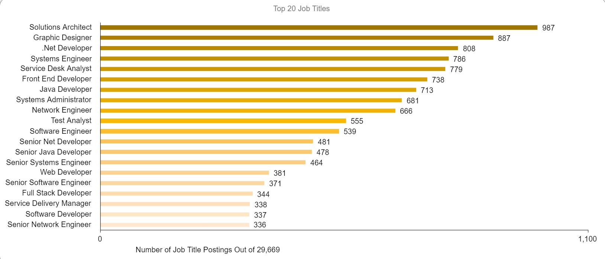

Simon Bird
According to the Burning Glass davta, the job in our group with the highest demand is Liam’s Front-end Developer position. The second highest, Software Engineering, belongs to Arjun. Alan’s Full-stack Software Engineering position is not explicitly listed in the data. However, its job outlook is likely similar to Arjun’s. Therefore, Alan’s could be considered the third-most in-demand. My Systems Analyst role is quite the outlier as it is less related to software development. It is also the least in-demand, making me the most likely to be broke and lonely forever. However, its demand is projected to grow by nearly 28% in the next five years, according to SEEK.
Our three most common IT skills are Web Development (i.e., HTML, CSS, JavaScript), Cloud Infrastructure (i.e., Azure, Git) and Python/Java.
Our three most common general skills are Communication, Organisation and Problem Solving. According to the Burning Glass data, Java is ranked as the second most in-demand IT skill shared in our group. Furthermore, Git is the eleventh highest skill in demand, with Python being the twelfth most in-demand.
Meanwhile, Communication, Organisation and Problem Solving are the three most in-demand skills respectively!
The IT skills with the highest demand outside of my group’s skill set are SQL, SAP and C#. These skills are first, fifth and sixth, respectively.
The most demanded general skills outside of the skill set are Writing, Planning and Research, which are second, sixth and ninth in terms of demand, respectively.
My opinion of my choice of career has changed slightly. There are many necessary skills for a Systems Analyst compared to the other job ideas. A Systems Analyst would likely need to undergo more education and training than the other careers. There are also many skills that are not associated with software engineering or development, such as analysis, business systems and adaptability. As I am more proficient at programming than other IT skills, this may impact my ability to become a Systems Analyst.
Liam Folie
My chosen job was based on a posting for a “Front End Developer”.
The job I choose does appear to be ranked in high demand. It is the sixth most frequently posted IT job title from the data provided. The Front End Developer title appears in 2.7% of all job postings from the data. In other words 738 job titles out of all postings. I found it interesting that the word “Developer” appears in 5,190 job postings. This leads me to believe that if I wanted to change roles/titles in the future I would have many transferable skills
Some of the IT-Specific skills from the original job description do appear in the Top 20 most requested skills. They include HTML, Python, and JavaScript. Amazon Web Services (AWS) is listed as the 67th most posted IT skill. I was unavailable to identify other relevant skills front the original posting. Some factors for this could be that the data is a few years old and given the rapid development in the IT sector, new required skills may have arisen. Nevertheless, this insight does illustrate that rather than focusing attention on learning specific skills from a specific job posting will not necessarily increase employability if they don’t even appear on this list. Another possibility could be that the specific posting could be for a niche industry requiring an IT specialist with knowledge of that industry.
The data from this set indicates that “Communication Skills” are the most demanded general skill by employers. It appears in over 30% off all job postings.
SQL, JAVA and Microsoft Windows are the top three highest-ranked IT-specific skills that did not appear in my required skill set for the job posting. I didn’t know there was a difference between Java and JavaScript but now I do. Given the similarity of their names, I would assume that if you knew one language you could learn the other with more ease. Then again it could be the same differences between Austria and Australia. I don’t know a lot about SQL aside from it being used in databases, I assume this skill would apply more so to data scientists or analysts.
Writing, Organisational Skills, and Research did not appear in my required skill set. To be fair I consider writing and organizational skills to be essential and should be assumed as a requirement for any job. I didn’t think research would appear so high but the more I think about it I can see why it’s important. To develop any kind of strategy, you need to be well informed on the topic you are dealing with and that required you to do some reading.
There has been some assurance that my ideal job does have positive employability prospects. Learning more about IT skills has given me a great deal of insight into the diversity and complexity of the IT industry. See what most frequently requested IT-specific skills do give me ideas on what things I should learn first before branching out into more niche areas of the industry.